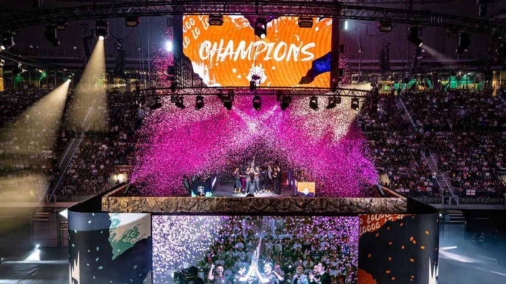

El escenario internacional de los eSports se viste de gala con el inicio del esperado World Championship de Call of Duty. El torneo reunirá a los doce mejores equipos del planeta en una fase final presencial donde disputarán el título de campeones del mundo y un bote de premios multimillonario.
Durante los cuatro días de competición, los conjuntos profesionales se enfrentarán en los modos de juego oficiales como Buscar y Destruir, Punto Caliente y Control. La organización ha instalado un escenario de alta tecnología equipado con cabinas insonorizadas para garantizar la máxima igualdad competitiva durante los enfrentamientos más ajustados.
Se anticipa una audiencia récord en las emisiones en directo a través de plataformas digitales, donde los aficionados podrán conseguir recompensas exclusivas dentro del juego por seguir las partidas. Con las entradas agotadas desde hace semanas, este mundial promete ser una de las ediciones más apasionantes en la historia de la franquicia.
Publicado por noticias eSports